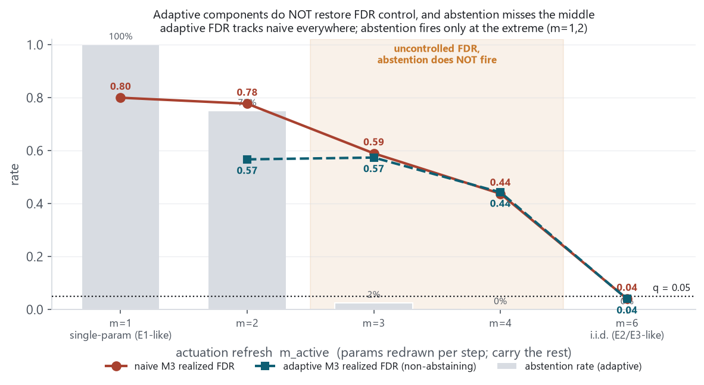
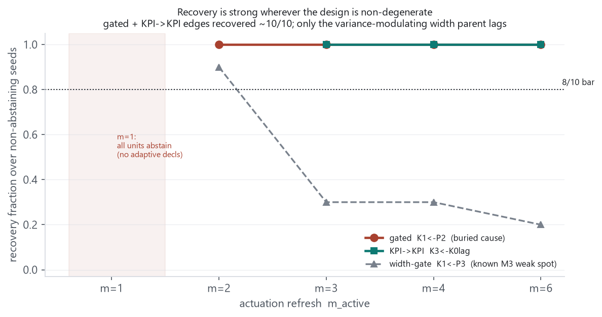
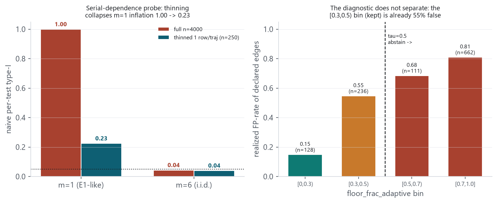
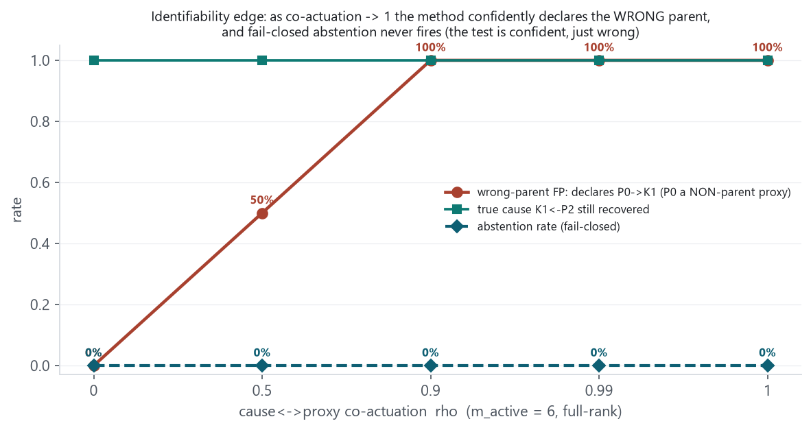
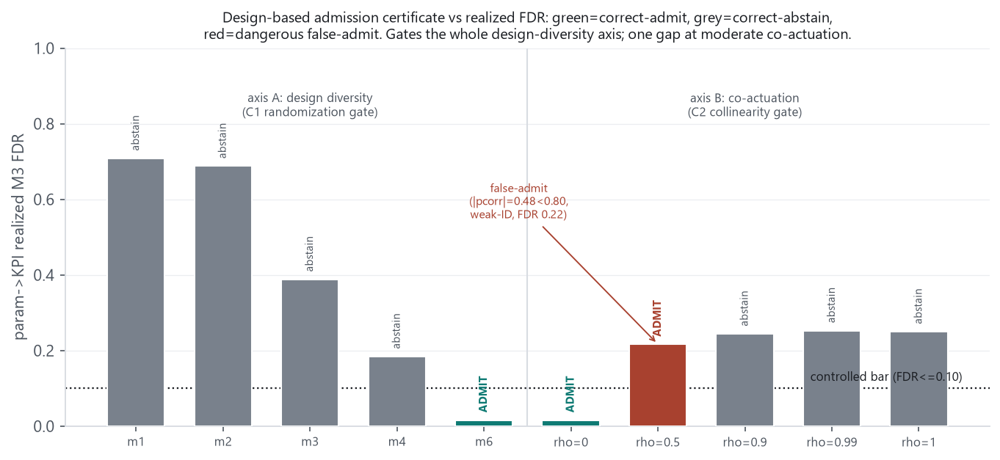
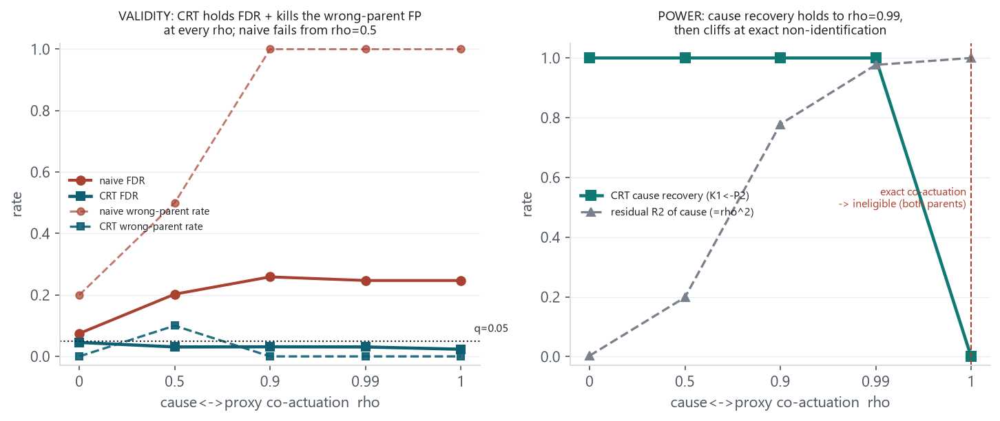
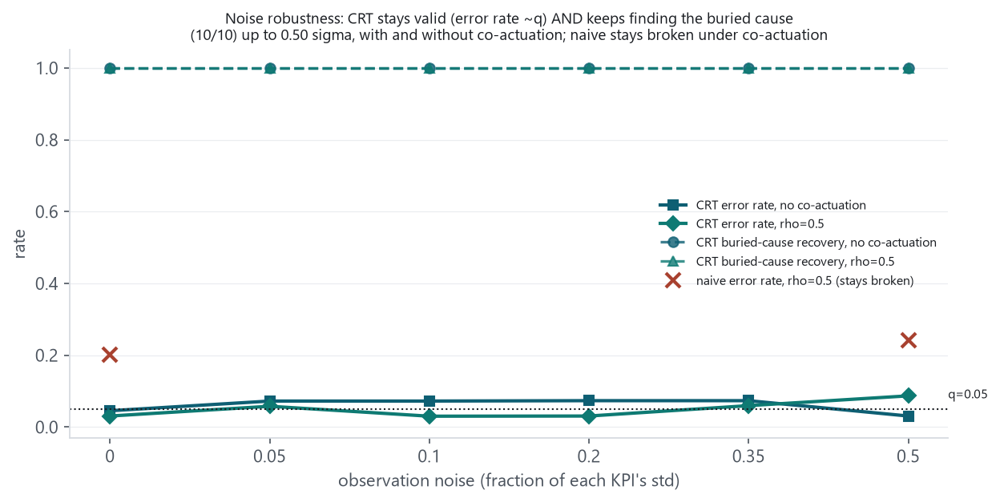
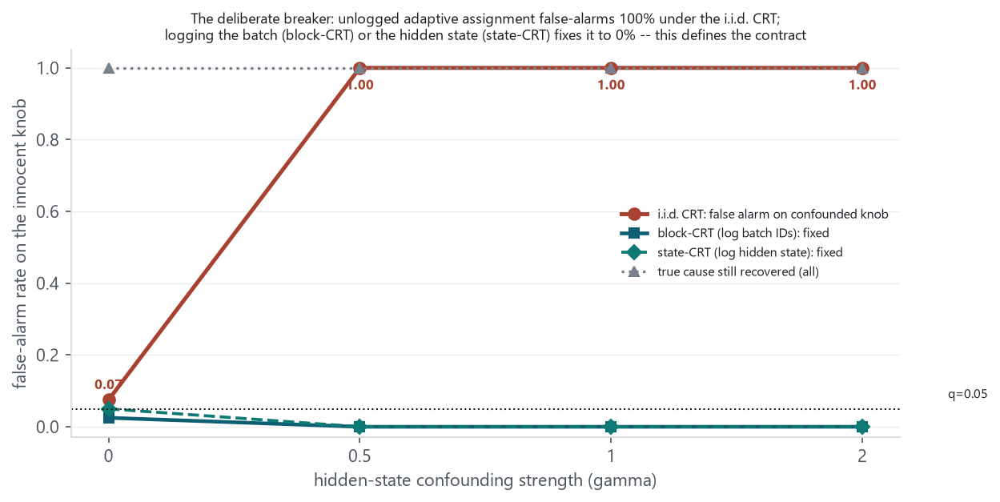

The prior delta proposed design-adaptive M3 with fail-closed abstention as the primary hypothesis for a single discovery engine, but a critical review established that the supporting evidence existed only at two extremes (rank-deficient E1, full-rank E2/E3), leaving the deployment middle unverified. This report runs the pre-declared validate-first calibration stress test that gates the whole direction: a synthetic SCM with a buried co-parent-gated edge and a KPI→KPI edge, swept along a design-diversity continuum (single-parameter → full-rank i.i.d. actuation) and an identifiability edge (cause↔proxy co-actuation). The result is decisive and negative. The cheap adaptive components (degenerate-stratum drop + studentized max) do not restore false-positive control in the middle — adaptive FDR tracks naive FDR at every design point (0.57 and 0.44 at the intermediate points). The fail-closed abstention does not fire where control is lost (abstention 0–3% at FDR 0.44–0.57). And on the identifiability edge, the method confidently declares the wrong parent (up to 10/10) while abstaining 0% of the time. M3's recovery is strong throughout (the gated and KPI→KPI edges recover ~10/10 wherever the design is non-degenerate), so the failure is not recovery but validity. The honest conclusion, per the pre-committed decision rule: the single design-adaptive-M3 engine is not earned; the binding lever is experimental design (randomized / interventional actuation), not the statistic — a permutation null alone cannot manufacture causal identification without a valid assignment mechanism or added causal assumptions.
reports/2026-09-08-discovery-method-unification-and-m3-superset/, which established that no
single statistic at fixed hyperparameters is a strict superset (M3 recovers the gated edge but
over-declares on E1) and proposed design-adaptive M3 as the primary hypothesis to be validated
first. This report is that validation. Method landscape unchanged: RCoT-v2 frozen (E2 skeleton),
partial-correlation frozen (E1 + E3 exact-linear), M3 a DEV prototype. All numbers here are truth-free
DEV; nothing frozen is touched.
The pre-declaration (scratchpad/design_adaptive_m3/PREDECLARE.md, fixed before any
scoring and revised once after an adversarial review, itself before scoring) specifies a synthetic
one-step SCM in the E-series row layout with six parameters and four KPIs. Its mechanisms are modelled
byte-faithfully on the E-series: a linear edge set, a co-parent-gated edge
K1 = -35·exp(-((P4+P2-25)²)/(2·safe_exp(P3)²))
— the P0→K5 analog, with a buried cause P2 (~1% marginal
variance) gated by a narrow width P3 — and a lagged
KPI→KPI edge K3 = 1.2·K0(lagged) + 0.8·P1.
Axis A (design diversity). Each step redraws m_active randomly-chosen parameters and carries the rest — E1's one-knob-at-a-time actuation at m_active=1, full-rank i.i.d. (E2/E3) at m_active=6, a continuum between. Axis B (identifiability edge). At the full-rank end, the buried cause P2 is correlated (Gaussian copula, strength rho) with a K1 non-parent P0, so a declared P0→K1 is a scorable wrong-parent false positive as rho→1.
Methods. N0 = naive M3 (bit-exact with the frozen m3_general — a correctness
gate confirmed max|ΔS*|=max|Δp|=0). N1 = adaptive: degenerate-stratum
drop (Var(X|S)≈0) + pooled-moments studentized max-over-stratifier
(the exchangeable form), with fail-closed abstention when the observable
floor_frac_adaptive > 0.5. Hyperparameters fixed at M3's values
(NC=6, NB=8, min=40, B=299, BH q=0.05). Metrics were computed in the
pre-declared order — validity (type-I, FDR, abstention) before power (recovery) —
and every number below was re-scored from the raw records independently of the run summary.
| m_active (design) | naive type-I | naive FDR | adaptive FDR | abstention | gated K1←P2 |
|---|---|---|---|---|---|
| 1 (single-param, E1-like) | 1.000 | 0.800 | — (all abstain) | 100% | n/a |
| 2 | 0.878 | 0.778 | 0.567 | 75% | 10/10 |
| 3 | 0.425 | 0.590 | 0.574 | 3% | 10/10 |
| 4 | 0.244 | 0.438 | 0.443 | 0% | 10/10 |
| 6 (full-rank i.i.d., E2/E3-like) | 0.044 | 0.041 | 0.040 | 0% | 10/10 |
Two facts settle the hypothesis. First, adaptive FDR equals naive FDR at every point (0.574 vs 0.590 at m=3; 0.443 vs 0.438 at m=4; 0.040 vs 0.041 at m=6): degenerate-stratum drop plus studentized max is essentially a no-op on false-positive control. Second, abstention fires only at the extreme (100% at m=1, 75% at m=2) and collapses to 0–3% exactly across the m=3–4 band where realized FDR is still 0.44–0.57. The observable diagnostic keyed to abstention does not detect the intermediate-design failure it was meant to fail closed on.

Recovery, by contrast, is strong. The gated edge K1←P2 and the KPI→KPI edge K3←K0lag both recover 10/10 wherever the design is non-degenerate (m≥2 and m≥3 respectively). The only weak true edge is the width-gate parent K1←P3 (1–6/10) — the documented M3 limitation on variance-modulating parents, not a new finding. So M3 remains a strong recovery component; the failure is validity, not power.

KPI edges near 10/10 for non-degenerate designs; width-gate parent lags">The abstention rule assumed a threshold on floor_frac_adaptive could separate controlled from uncontrolled regimes. It cannot. Binning every declared edge by the unit's floor_frac_adaptive (Figure 4, right) shows the realized false-positive rate rising smoothly — the [0.3,0.5) bin, which sits below the tau=0.5 cut and is therefore kept, is already 55% false. There is no threshold that abstains the uncontrolled units without also abstaining controlled ones, because the diagnostic varies continuously with the same design property that drives the confounding.
The trajectory-thinning probe (Figure 4, left) locates the cause. Subsampling to one row per trajectory (removing within-trajectory serial dependence) collapses the m=1 naive type-I from 1.00 to 0.23, while the full-rank m=6 stays nominal (0.04) either way. Most of the rank-deficient collapse is serial-dependence in the carried design, not static rank — and the residual 0.23 (still far above 0.05) is what survives near-independent sampling (design-induced cross-sectional dependence, and/or incomplete conditioning or null misspecification — the probe locates the dominant driver, it does not fully partition the residual). Neither part is a calibration error a null can shuffle away; both are real associations that are simply not causal.

Axis B isolates the sharpest failure. At the full-rank end (where calibration is otherwise nominal), as the buried cause P2 and the non-parent proxy P0 approach deterministic co-actuation, the method increasingly declares the false edge P0→K1: 0/10 at rho=0, 6/10 at rho=0.5, 10/10 at rho≥0.9 — while it still recovers the true cause and while abstention stays at 0% throughout. This is an identifiability failure, not a calibration one: when a cause and a proxy move together, no permutation null can attribute the effect, and the fail-closed diagnostic cannot catch it because the test is not uninformative — it is confident, and wrong.

The unifying reading of all three failures is that under a non-randomized (carried / partial) actuation design, non-causal candidates are genuinely conditionally associated with the target in the observational distribution — through carried common history and serial dependence. A permutation conditional-independence test then correctly detects real associations that simply are not causal: rejecting the CI null on a genuinely-associated non-parent is not a statistical type-I error but a causal false discovery across an invalid identification bridge. So a permutation null alone cannot manufacture causal identification without a valid assignment mechanism or added causal assumptions (randomization is the most direct such mechanism; measured-confounder adjustment, instruments, or environment-invariance are others this test does not explore). That is why the adaptive components (which only re-shape the null) do not help, why the abstention diagnostic (which detects an uninformative null, not a confounded one) does not fire, and why exact co-actuation is structurally unidentifiable (near-exact co-actuation, rho<1, is weak identification — the 10/10 wrong-parent rate at rho≥0.9 is M3's weak-identification failure, not impossibility for every method). The one design point where this observational M3 recovered the causal structure cleanly is the fully-randomized one (m_active=6, rho=0: FDR 0.04, edges 10/10, no wrong-parent) — evidence, not proof, from a single noiseless SCM.
This is consistent with the project's standing direction — discovery is an offline periodic structure-learning step (a non-RT rApp), and E5 is interventional by construction. The stress test now grounds that direction: the way to make M3 trustworthy is not to tune its null but to feed it randomized / factorial / interventional actuation, which the offline path can arrange. One split matters (per adversarial review): randomization identifies parameter→KPI effects directly, but lagged KPI→KPI edges stay endogenous unless parameter interventions supply valid instruments or the temporal-SCM assumptions identify them — the two edge classes need separate estimands and separate eligibility, not one causal certificate.
On the observational path the deferred M3 FDR / multiplicity fix is beside the point: the intermediate-design FDR is not a calibration defect a fix could remove — it is confounding by design, which no null tuning addresses. But the fix is not moot on the randomized path (an earlier draft over-stated this): the m=6 FDR 0.04 here is one noiseless SCM — evidence, not a validity proof. A randomized E5 pipeline still needs an explicit, pre-declared multiplicity / FDR procedure and assignment-aware inference (dependence across candidate tests, BH scope, noise, and overlap all remain to be validated). What the observational failure removes is the hope of fixing FDR by tuning the statistic; it does not remove the need for a real multiplicity procedure once the design is right.
The recommended architecture puts a design-based admission certificate at the front — a
gate computed from the actuation / assignment design before outcomes are seen. The sharpest
question is whether such a design-only gate can separate the controlled from uncontrolled regimes
where the outcome-derived floor_frac could not. That is directly
testable on the same grid, because the calibration above already labels every point controlled or not.
The certificate criteria and thresholds were fixed from principle before scoring
(PREDECLARE_certificate.md): C1 independent per-unit randomization (max carry-fraction
and lag-1 within-trajectory autocorrelation < 0.10 — the assignment-mechanism signal the
contemporaneous condition number missed); C2 bounded conditional co-actuation (max
|partial-correlation| among parameters < 0.80); C3 overlap (degenerate-stratum fraction <
0.10); C4 sample adequacy; and lagged KPI→KPI candidates marked ineligible for direct
identification (prior-step outcomes — an instrument is required, Phase 2). Ground-truth label
(pre-declared): a point is controlled iff its parameter→KPI M3 FDR ≤ 0.10.

KPI FDR per grid point colored by certificate verdict: two green admits below the 0.10 line, grey abstains above it across both axes, one red false-admit at rho=0.5">| regime | certificate | param FDR | criterion firing | cell |
|---|---|---|---|---|
| design diversity m=1..4 | ABSTAIN | 0.71–0.18 | C1 (carry/autocorr) | correct-abstain |
| randomized m=6, rho=0 | ADMIT | 0.016 | all pass | correct-admit |
| co-actuation rho≥0.9 | ABSTAIN | ~0.25 | C2 (partial-corr) | correct-abstain |
| co-actuation rho=0.5 | ADMIT | 0.217 | all pass (pcorr 0.48) | dangerous false-admit |
Phase 1's one failure was moderate co-actuation (rho=0.5), which a pairwise-correlation bound cannot
catch. sol's reframe: that false-admit is a property of the naive permutation null, not a
fundamental limit — because we control actuation, we can test each parameter with a
conditional randomization test that resamples it from its known assignment distribution
P(P_j | P_-j), holding the outcome and the other columns fixed (M3's score is
the statistic; the CRT supplies the null). Under H0 this is exact-nominal regardless of co-actuation, and
when testing the wrong parent, resampling it from its conditional keeps its association-through-the-cause,
so no spurious extra effect is found. Phase 2 built this (crt.py, assignment-logged design
dgp_assignment.py) plus a residual-information certificate superseding the pairwise C2
(residual_info_certificate.py), and validated it with validity scored separately
from power (PREDECLARE_phase2.md, fixed before scoring).
| rho | residual R² | naive FDR | naive wrong-parent | CRT FDR | CRT wrong-parent | CRT cause recovery |
|---|---|---|---|---|---|---|
| 0.0 | 0.00 | 0.075 | 2/10 | 0.045 | 0/10 | 10/10 |
| 0.5 | 0.20 | 0.203 | 5/10 | 0.031 | 1/10 | 10/10 |
| 0.9 | 0.78 | 0.259 | 10/10 | 0.031 | 0/10 | 10/10 |
| 0.99 | 0.98 | 0.247 | 10/10 | 0.018 | 0/10 | 10/10 |
| 1.0 (exact) | 1.00 | 0.247 | 10/10 | 0.023 | 0/10 | 0/10 (ineligible) |

Everything so far was noiseless. Real KPIs are measured with noise, and noise-robust discovery has been
the project's standing binding constraint. Observation noise was added to the KPI columns only (each
observed = latent + N(0, (frac·sigma_KPI)²); parameters are exact
control settings, kept clean), swept frac in {0, 0.05, 0.10, 0.20, 0.35, 0.50}
at no co-actuation and at the hard rho=0.5 case (pre-declared in
PREDECLARE_phase3_noise.md before scoring; the noiseless cells reproduce the Phase-2 result
exactly, an internal anchor). Because the CRT resamples the clean parameters from their known
assignment, its null is untouched by outcome noise, so validity was expected to hold; the open question
was power on the buried cause (~1% of the target's variance).

An adversarial review flagged two threats sharper than larger Gaussian noise: compliance (the
parameter actually realized differs from the one commanded — the CRT resamples the commanded
assignment, so a mismatch could mis-specify its null) and overlap (thin actuation leaving too
little variation to test). Pre-declared in PREDECLARE_phase3b_overlap_compliance.md;
the clean cell reproduces the Phase-2 naive-fails / CRT-fixes pattern as an anchor.
| stress | setting | CRT error rate | CRT wrong-parent | CRT cause recovery |
|---|---|---|---|---|
| compliance | full response (anchor) | 0.03–0.07 | 0–1/10 | 10/10 |
| compliance | 80% response + actuation noise | 0.02–0.04 | 0–1/10 | 10/10 |
| compliance | 50% response + actuation noise (+ rho=0.5) | 0.01–0.02 | 0/10 | 10/10 |
| overlap | actuation 100% → 10% of range | 0.05–0.08 | 0–1/10 | 10/10 |
Every stress to this point only reduced power; none violated the CRT's assignment model, so it stayed
valid. The adversarial review identified the minimal credible breaker: adaptive assignment driven by
an omitted latent operational state. A block-structured hidden state S
drives the outcome, and a null knob is commanded as a function of S
(A = gamma·S + noise) — so the innocent knob is confounded with the
outcome through S. A CRT that resamples marginally (ignoring
S) should false-alarm. Two fixes were pre-declared: a block-CRT that
permutes commands within blocks sharing S (needs only block IDs), and a
state-CRT that resamples from P(command | S) (needs the logged state).
Pre-declared in PREDECLARE_phase4_breaker.md; 40 seeds.

=0.5; block-CRT and state-CRT stay at 0; true cause recovery flat at 1.0.">DRAFT_E5_data_collection_contract.md. Not yet tested: within-block state drift and
endogenous (feedback) non-compliance — required before final sign-off.
m3_general (max|Δ|=0); synthetic endpoints bracket the known
E1/E2/E3 regimes on observable signatures; DGP content-hash-frozen before scoring. (2) The adaptive null
does not restore FDR control in the middle (adaptive = naive at every point). (3) Fail-closed abstention
does not fire where FDR is uncontrolled (0–3% at FDR 0.44–0.57), and the diagnostic does not
separate regimes (the kept [0.3,0.5) floor-fraction bin is 55% false).
(4) The identifiability edge produces confident wrong-parent declarations (to 10/10) with 0% abstention.
(5) The rank-deficient collapse is mostly serial-dependence (thinning 1.00→0.23). All re-scored
independently of the run summary. (6) Phase 1 of the recommended architecture — a design-based
admission certificate — is correct on 9/10 grid points (thresholds pre-declared from principle,
not retuned): it gates the whole design-diversity axis where floor_frac
failed, with one dangerous false-admit at moderate co-actuation (weak identification). (7) Phase 2 —
the assignment-aware CRT behind the gate — closes that gap: valid FDR (~q) and ~0 wrong-parent
across all co-actuation (naive fails from rho=0.5), full cause power to rho=0.99, correct joint
ineligibility only at exact non-identification. The two-route architecture holds validity where every
observational method failed. (8) Under observation noise to 0.50 sigma the CRT stays valid (error rate
~q, wrong-parent ~0) and keeps recovering the buried cause 10/10, with and without co-actuation; the
naive method stays broken under co-actuation regardless of noise. (9) Under imperfect actuation
(compliance to 50% response + actuation noise) and thin actuation (to 10% of range), the CRT stays valid
and keeps full cause power — benign under these (exogenous, continuous) models, with sharper
variants (endogenous non-compliance, discrete/clipped positivity) still untested. A leak audit passed:
decoupling the true cause drops its recovery to 0/10, and its detection sits at the permutation floor at
every noise level (explaining the robustness). (10) A deliberate breaker (adaptive assignment with an
omitted hidden state) false-alarms 100% under the marginal CRT for any confounding; logging the
batch/session (block-CRT) or the state (state-CRT) restores 0% while keeping the true cause —
defining the data-collection contract (draft written).
scratchpad/design_adaptive_m3/:
PREDECLARE.md (v2.1, fixed before scoring), dgp.py, m3_adaptive.py,
anchor1_bitexact.py, anchor2_endpoints.py, run_stress.py,
score.py, verify_rescore.py (independent re-score); the GPU port
m3_gpu.py / gate_gpu_equiv.py / gate_gpu_equiv_all.py; the
admission certificate PREDECLARE_certificate.md / certificate.py /
validate_certificate.py; and Phase 2 PREDECLARE_phase2.md /
dgp_assignment.py / crt.py / residual_info_certificate.py /
validate_crt.py; Phase 3a noise PREDECLARE_phase3_noise.md /
validate_noise.py / leak_audit.py; and Phase 3b
PREDECLARE_phase3b_overlap_compliance.md / dgp_compliance.py /
validate_phase3b.py; and Phase 4 PREDECLARE_phase4_breaker.md /
dgp_adaptive.py / demo_break_fix.py /
DRAFT_E5_data_collection_contract.md. Results:
results_axisA.json, results_axisB.json, results_thinprobe.json,
certificate_validation.json, crt_validation.json, noise_validation.json,
phase3b_validation.json, break_fix_validation.json.
Figures regenerable via make_figs.py (reads those JSONs live and applies BH inline). Every
headline number was re-scored from the raw records independently of the run summary, and the correctness
and GPU-equivalence gates were re-run independently by the coordinator. The pre-declaration was reviewed
by a separate adversarial agent before any scoring; its critiques (asymmetric studentization, serial
dependence, vacuous abstention, diagnostic circularity, missing false proxy) were incorporated into the
v2 design that was then tested. The finished result was then reviewed by the same agent, and its
over-claim corrections (a null alone cannot manufacture identification vs. the broader "no null can
separate"; the multiplicity fix is not moot on the randomized path; parameter→KPI vs KPI→KPI
need separate estimands; rho<1 is weak- not non-identification; statistical vs causal validity) are
reflected above. Nothing here changes a frozen constant, mechanism, gate, or package
module. · reports/2026-09-09-design-adaptive-m3-calibration-stress/